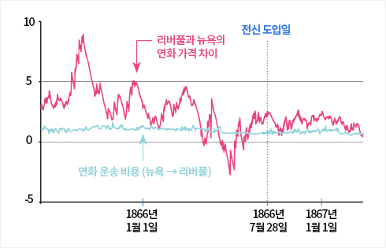
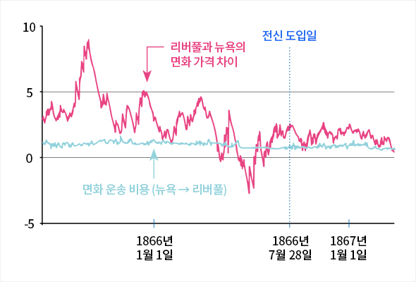
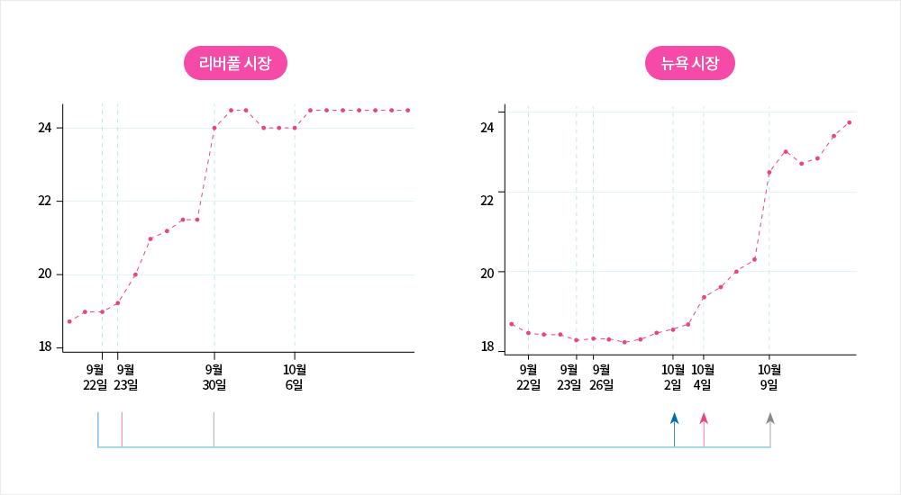
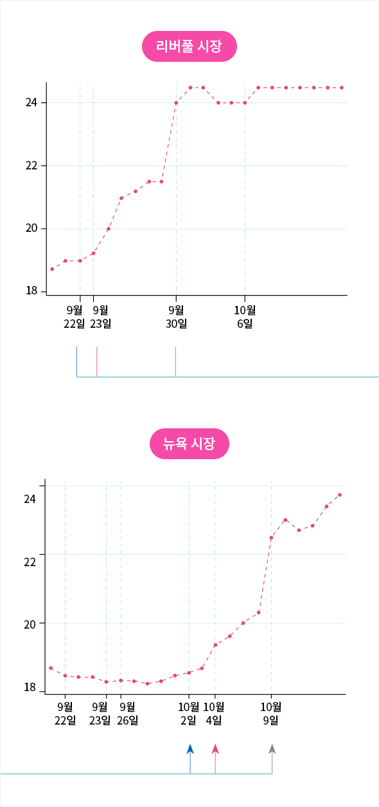

와 제 롤모델이 잡스에요!!! 아이폰 첫 출시되고 나서부터 계속 아이폰 쓰고 있는데 잡스가 너무 그리워요ㅠㅠ 지금은 돈만 벌려고 하는 것 같아서 디자인 발전도 없고ㅠㅠ와 제 롤모델이 잡스에요!!! 아이폰 첫 출시되고 나서부터 계속 아이폰 쓰고 있는데 잡스가 너무 그리워요ㅠㅠ 지금은 돈만 벌려고 하는 것 같아서 디자인 발전도 없고ㅠㅠ와 제 롤모델이 잡스에요!!! 아이폰 첫 출시되고 나서부터 계속 아이폰 쓰고 있는데 잡스가 너무 그리워요ㅠㅠ 지금은 돈만 벌려고 하는 것 같아서 디자인 발전도 없고ㅠㅠ와 제 롤모델이 잡스에요!!! 아이폰 첫 출시되고 나서부터 계속 아이폰 쓰고 있는데 잡스가 너무 그리워요ㅠㅠ 지금은 돈만 벌려고 하는 것 같아서 디자인 발전도 없고ㅠㅠ와 제 롤모델이 잡스에요!!! 아이폰 첫 출시되고 나서부터 계속 아이폰 쓰고 있는데 잡스가 너무 그리워요ㅠㅠ 지금은 돈만 벌려고 하는 것 같아서 디자인 발전도 없고ㅠㅠ
차트로 보는 해운
대륙 간 전신(電信)의
도입과 무역품 가격의 변화
도입과 무역품 가격의 변화
대륙 간
전신(電信)의 도입과
무역품 가격의 변화
경제학을 전공한 신현호 칼럼니스트는 KPMG에서 비즈니스 컨설턴트로 근무한 뒤,
국회 경제상임위의 정책연구위원으로 근무하였고 지금은 경제 칼럼니스트로
활동하고 있다. 해운, 무역, 세계화에 대한 흥미로운 차트를 <바다소리>에 소개한다.
시장 경제가 효율적으로 작동하는 데 필요한 중요한 전제 중 하나는 관련 정보가
시장의 참여자에게 신속하고 정확하게 전달되는 것이다. 그중에서도 무역의 경우
정보 전달은 특히 중요한 문제인데, 국제무역이 대규모로 확대되던
19세기까지만 해도 정보의 전달은 매우 더뎠다. 이러한 정보의 지체가 국제무역에
어떤 영향을 미치는지에 대해 미국 MIT의 경제학자 클라우디아 스타인벤더가
최근 흥미로운 연구 결과를 발표했다.
글
신현호(칼럼니스트)
그림 출처
AER
19세기 당시 아메리카 대륙과 유럽 사이의 대서양 무역이 가장 중요하였는데, 그중에서도 면화의 거래비중이 가장 컸다. 당시 영국의 수입품 중에서 가장 비중이 컸던 것은 면화(36%)로, 2위와 3위인 양모(7%)와 실크(6%)를 크게 앞섰다. 그리고 미국의 수출품 중에서는 면화가 50.5%로 전체 수출품의 절반 이상을 차지할 정도로 중요하였다.
이런 상황에서 주요 면화 수출항이었던 미국 뉴욕항의 면화 수출업자들은 핵심 면직물 공업 지역이었던 영국 리버풀의 시장 상황에 민감할 수밖에 없었는데, 당시 리버풀의 뉴스는 인쇄된 신문이 증기선에 실려 뉴욕항에 도착할 때까지 뉴욕의 면화업자들은 시황에 깜깜할 수밖에 없었다. 대서양 사이에 뉴스가 전달되는 기간은 7~15일 정도가 소요되었다고 한다.


그림1면화 가격 차이와 운반 비용 (단위 : 면화 1파운드당 가격(펜스))
원칙적으로 면화 수입지 리버풀의 면화 가격은 수출지 뉴욕 면화 가격에 운반 비용을 더한 것이어야 하지만, 그래프 <그림1 참조> 에서 보듯 양자 사이의 가격 격차(붉은선)는 단순한 운반비용(푸른선) 이상으로 크게 출렁거렸다. 그러다 1866년 7월 28일 대서양 해저 케이블 설치가 완공된 후 두 지역의 면화 시장 정보는 시차 없이 전달될 수 있게 되었고, 이후 양 시장의 가격 차이가 급격히 축소되고 매우 안정적인 모습을 띠게 된 것을 볼 수 있다.


그림2리버풀 뉴스에 대한 뉴욕 면화 가격의 반응 (단위 : 면화 1파운드당 가격(펜스))
또 두 번째 그래프 <그림2 참조> 를 통해 실제 사례를 살펴 보면, <리버풀 머큐리> 신문을 통해 1865년 9월 30일 리버풀의 면화 수요가 급등하고, 랭카셔의 면화 비축량이 생각보다 부족하다는 것이 알려지면서 리버풀의 면화 가격이 급등하였다. 반면 10월 2일 뉴욕에 증기선이 대서양을 건너 도착하지만, 여기에는 9월 23일자 리버풀 시장 정보가 있을 뿐이었다. 결국 10월 9일 증기선이 도착한 이후에야 비로소 9월 말 영국 시장 충격이 <뉴욕 타임즈>를 통해 알려지고 뉴욕의 면화 격이 급등한 것을 볼 수 있다.
스타인벤더 교수는 정보 전달 지체가 초래하는 사회적 비효율을 계산하였는데, 대서양 전신 도입 이전 연간 83만 8천 파운드에 이르렀던 사회적 낭비가 전신 도입 이후 10만 9천 파운드로 대폭 축소되어, 효율성 개선의 효과가 연간 면화 무역액의 8.4%에 이른다는 것을 밝혔다. 전신 도입은 금융과 상품시장의 트레이더들이 최신 컴퓨터와 스마트폰으로 무장하고, 끊임없이 모니터를 주시하는 모습의 19세기 버전이라 할 수 있다.
지금이야 정보의 전달 속도가 이 시기와 비교가 안되지만, 특정인이 정보 전달의 속도를 분초 단위라도 줄일 수 있다면 엄청난 차익 거래의 기회가 생길 것이고, 사회 전반적으로 이어진다면 후생 증가로 이어질 것이다. 세계화는 국가 간 상품의 교역뿐만 아니라 정보가 국경을 넘어 정확하고 신속하게 전달되는 것이라는 교훈을 다시 한 번 새길 필요가 있다.
-
최고예요
322
-
좋아요
322
-
슬퍼요
322
-
그저그래요
322
-
화나요
322